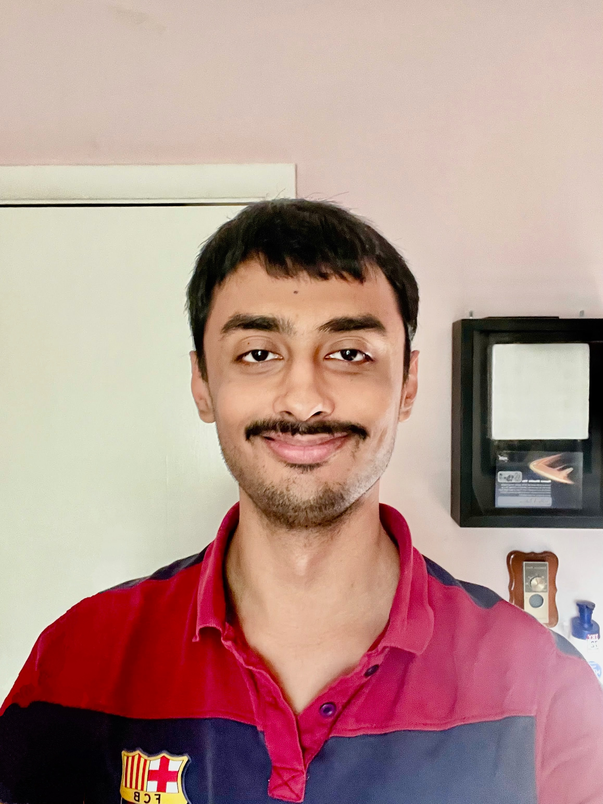

|

|
Anugunj Naman
Ph.D. Student
Purdue University, IN, USA
anugunjjha AT gmail.com (personal email)
anaman AT purdue.edu (for academic related)
|
Bio
I am a Ph.D. student in the ECE Department at Purdue University, advised by Prof. James Krogmeier, with a research focus on audio signal processing. I recently completed my M.S. in Computer Science at Purdue, co-advised by Prof. Krogmeier and Prof. Sunil Prabhakar.
My previous experience includes a full-time role at Elevance Health and a research internship at NVIDIA, where I worked on speech recognition, meta-learning, and few-shot learning. I have also contributed to the HuggingFace Transformers library by integrating two vision transformer models: Microsoft's CvT and Meta's LeViT.
Education
-
Present: Ph.D. , School of Electrical and Computer Engineering, Purdue University.
Supervisor: James Krogmeier.
-
May 2025: M.S., Department of Computer Science, Purdue University.
Supervisor: James Krogmeier and Sunil Prabhakar.
-
May 2022: B.Tech., Department of Computer Science and Engineering, Indian Institute of Information Technology.
Research
-
FAST: Fast Audio Spectrogram Transformer.
Anugunj Naman and Gaibo Zhang.
IEEE International Conference on Acoustics, Speech and Signal Processing (ICASSP), 2025.
[Paper]
-
Customized Style Transfer using Discrete Sampling.
Anugunj Naman.
Empirical Methods in Natural Language Processing (EMNLP), 2024.
[Paper]
-
Random Propagations in GNNs.
Thu Bui, Anugunj Naman, Carola-Bibiane Schönlieb, Bruno Ribeiro, Beatrice Bevilacqua and Moshe Eliasof.
NeurIPS Workshop on Unifying Representations in Neural Models (UniReps), 2024.
[Paper]
-
Indic Languages Automatic Speech Recognition using Meta-Learning Approach.
Anugunj Naman and Kumari Deepshikha
International Conference on Natural Language and Speech Processing (ICNLSP), 2021.
[Paper]
-
A Multimodal Author Profiling System for Tweets.
Chanchal Suman, Anugunj Naman, Sriparna Saha and Pushpak Bhattacharyya.
IEEE Transactions on Computational Social Systems, (IEEE TCSS), 2021.
[Paper]
Blogs
-
Shallot Routing: An Anonymous Peer-to-Peer Routing Protocol.
[Link]